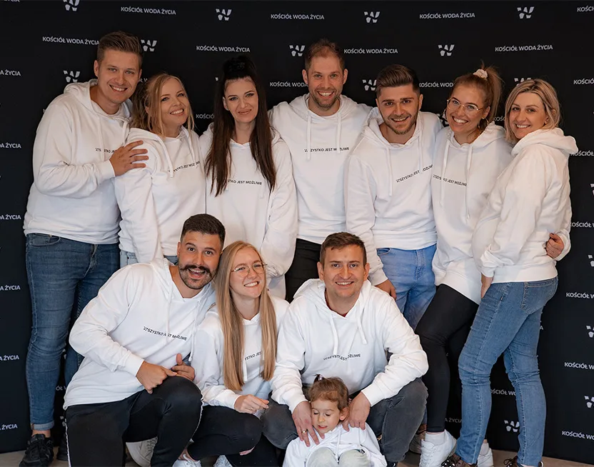

Iglesia
Woda Życia es una iglesia contemporánea con el mensaje atemporal del Evangelio, donde una persona corriente puede conocer a un Dios extraordinario y emprender la mejor aventura de la vida: seguir a Cristo y llevar a cabo su plan singular junto a otros creyentes.
Tengo mucho pueblo en esta ciudad
Hch 18:10 | 1990
Siguiendo a Cristo, vivimos según los valores del Reino de Dios.
Formamos una iglesia contemporánea, intergeneracional y carismática que expresa amor a Dios y a las personas.
Vencemos llevando a las personas a una relación llena de vida con Dios Padre.
Vencemos experimentando a Dios en las reuniones comunes, en los grupos en casas, en conferencias, eventos y relaciones uno a uno.
Vencemos aportando un cambio positivo a la vida de nuestra ciudad.
Valores
Jesús Personas Comunidad Generosidad Calidad
Pastor Mateusz Godawa
Mateusz Godawa es el pastor de la iglesia Woda Życia. Junto con su esposa Aneta, desde 2018 construyen activamente la comunidad local en Koszalin, animando a descubrir la increíble aventura que es la vida diaria en relación con Cristo. Mateusz y Aneta son padres de Alisa y Elian.

Equipo de líderes
Este es nuestro equipo: personas que aman a Jesucristo y aman edificar su iglesia.
Pastor Paweł Godawa
Paweł Godawa (1967–2018) fue, desde su fundación y durante casi 30 años, el pastor principal de la iglesia «Woda Życia». La historia de su vocación se remonta al movimiento carismático católico de los años 80. En sus enseñanzas presentaba un enfoque práctico de la fe, de las Escrituras y de la relación del ser humano con Dios. La transformación de la mentalidad y del estilo de vida, las relaciones con los seres queridos, la generosidad y la edificación de la iglesia local fueron los temas centrales de su ministerio. Autor de los libros: Zrozumienie życia, Sztuka słuchania, Niebo i piekło w kościele, Niebo i piekło w portfelu.